|
xtd
0.2.0
|
Loading...
Searching...
No Matches
Dialogs appearances
Contains dialogs appearances.
- About dialog appearance
xtd::forms::about_dialog Windows macOS Gnome Light 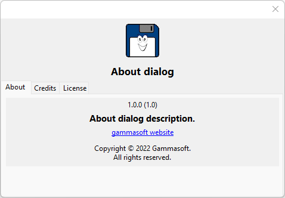

Dark 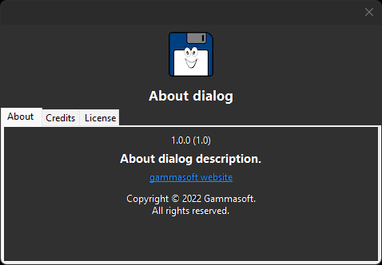

- assert dialog appearance
xtd::forms::assert_dialog Windows macOS Gnome Light 

Dark 
 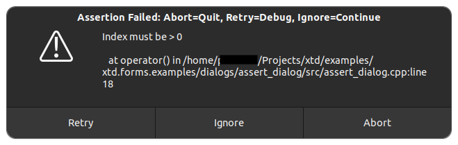
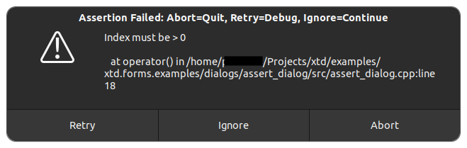
- Busy dialog appearance
xtd::forms::busy_dialog Windows macOS Gnome Light 
Dark
- Color dialog appearance
xtd::forms::color_dialog Windows macOS Gnome Light 


Dark 


- Debug message box appearance
xtd::forms::debug_message_box Windows macOS Gnome Light Dark
- Exception dialog appearance
xtd::forms::exception_dialog Windows macOS Gnome Light 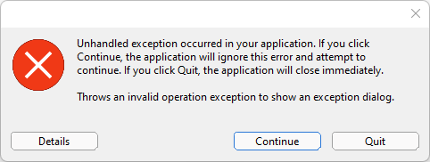Dark
- Find dialog appearance
xtd::forms::find_dialog Windows macOS Gnome Light 

Dark 


- Folder browser dialog appearance
xtd::forms::folder_browser_dialog Windows macOS Gnome Light 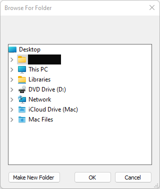
Dark 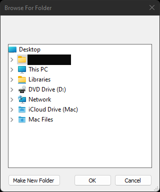
- Font dialog appearance
xtd::forms::font_dialog Windows macOS Gnome Light 


Dark  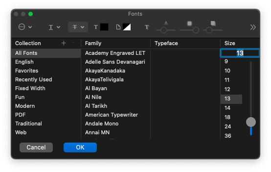
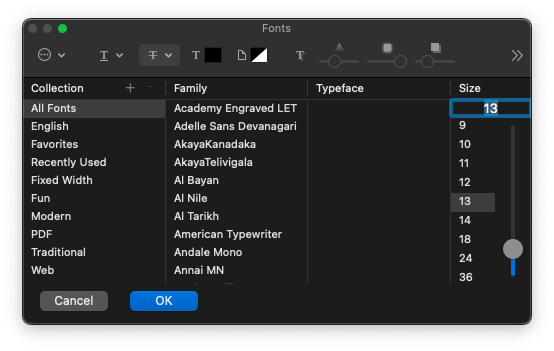
- Input dialog appearance
xtd::forms::input_dialog Windows macOS Gnome Light 


Dark 

- Message box appearance
xtd::forms::message_box Windows macOS Gnome Light 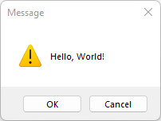

Dark 
 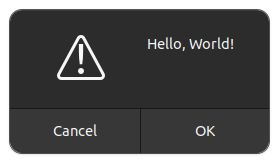
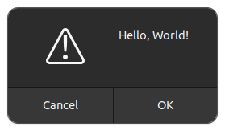
- Open file dialog appearance
xtd::forms::open_file_dialog Windows macOS Gnome Light  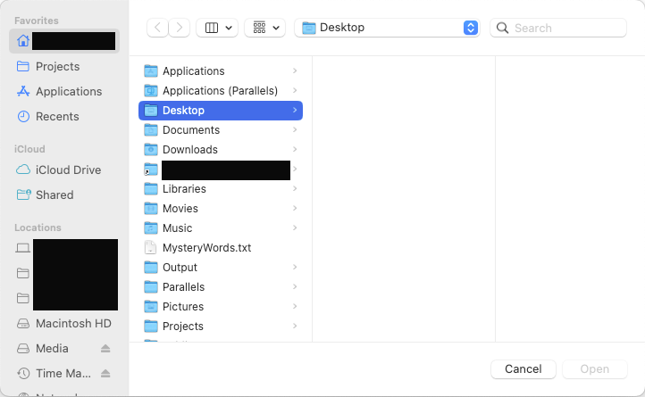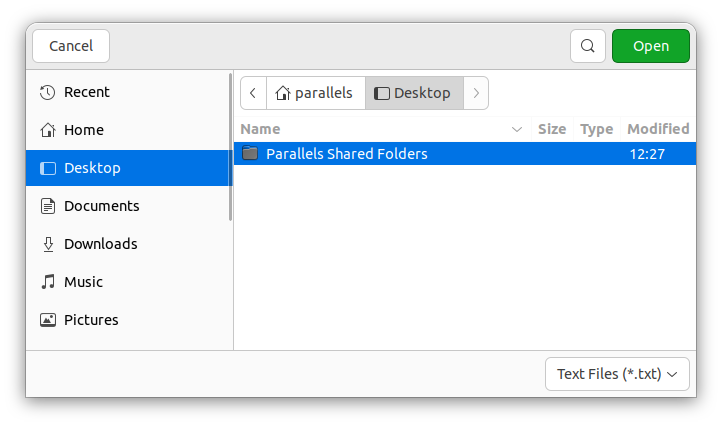
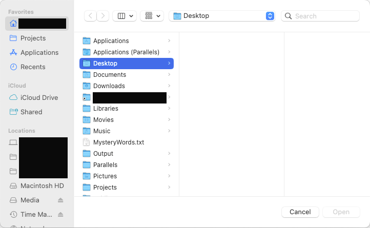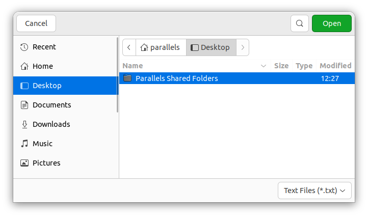Dark 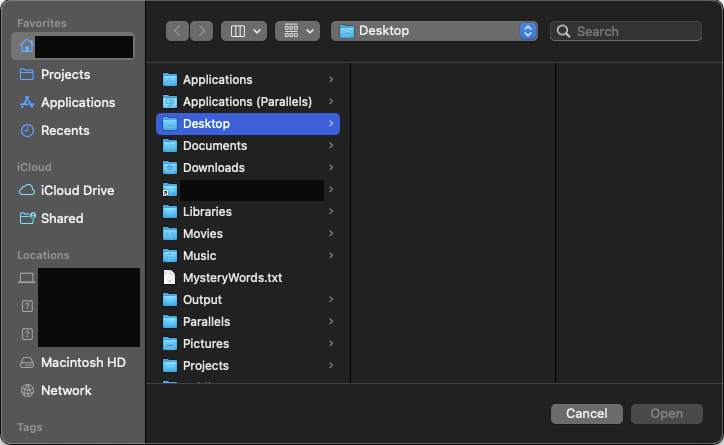
- Progress dialog appearance
xtd::forms::progress_dialog Windows macOS Gnome Light 


Dark 


- Replace dialog appearance
xtd::forms::replace_dialog Windows macOS Gnome Light 


Dark 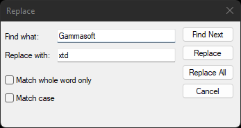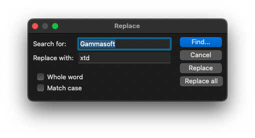
- Save file dialog appearance
xtd::forms::save_file_dialog Windows macOS Gnome Light 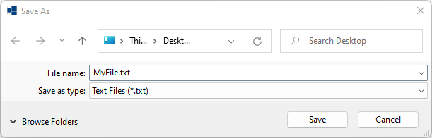
Dark 


- Trace message box appearance
xtd::forms::trace_message_box Windows macOS Gnome Light 
Dark 
- Remarks
- Run the dialogs examples to see xtd::forms dialogs in action.
Generated on Tue Mar 5 2024 16:49:01 for xtd by Gammasoft. All rights reserved.